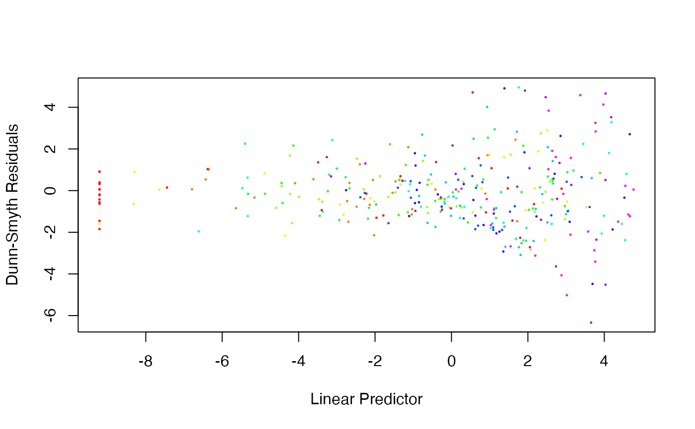
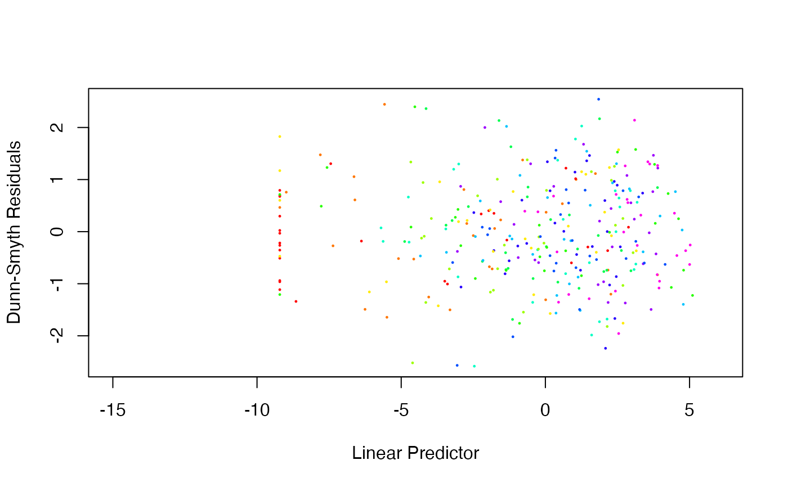

Plot Diagnostics for a manyany or glm1path Object
plot.manyany.RdUsage
# S3 method for manyany
plot( x, ...)Arguments
- x
manyanyobject, resulting from a call tomanyany.- ...
other parameters to be passed through to plotting functions.
Details
plot.manyany is used to check assumptions that are made
when fitting a model via manyany or glm1path. As in Wang et al (2012), you should check
the residual vs fits plot for no pattern (hence no suggestion of failure of any linearity
and mean-variance assumptions).
It is also desirable that residuals follow a straight line of slope one on a
normal Q-Q plot.
These plots use Dunn-Smyth residuals (Dunn & Smyth 1996), described at residuals.manyglm.
Note that for discrete data, these residuals involve random number generation, and
will not return identical results on replicate runs - so it is recommended that you
plot your data a few times to check if any pattern shows up consistently across replicate plots.
Note also that for glm1path objects, slope coefficients have been shrunk towards zero so it is not unusual to see an increasing slope on the residual plot, with larger residuals coinciding with larger fitted values. This arises a a consequent of shrinkage, check if it goes away upon removing the penaly term (e.g. on refitting using manyglm) before ringing any alarm bells.
References
Dunn, P.K., & Smyth, G.K. (1996). Randomized quantile residuals. Journal of Computational and Graphical Statistics 5, 236-244.
Wang Y., Naumann U., Wright S.T. & Warton D.I. (2012). mvabund - an R package for model-based analysis of multivariate abundance data. Methods in Ecology and Evolution 3, 471-474.
Examples
require(graphics)
data(spider)
abund <- mvabund(spider$abund)
X <- as.matrix(spider$x)
## Plot the diagnostics for a log-linear model assuming counts are poisson:
spidPois <- manyany(abund ~ X, "glm", family=poisson())
#> Warning: glm.fit: fitted rates numerically 0 occurred
plot(spidPois,pch=19,cex=0.2)

## Fan-shape means trouble for our Poisson assumption.
## Try a negative binomial instead...
require(MASS) # this package is needed for its negative binomial family function
#> Loading required package: MASS
spidNB <- manyany(abund ~ X, "manyglm", family="negative.binomial")
plot(spidNB,pch=19,cex=0.2,xlim=c(-15,6))

## That's looking a lot better...